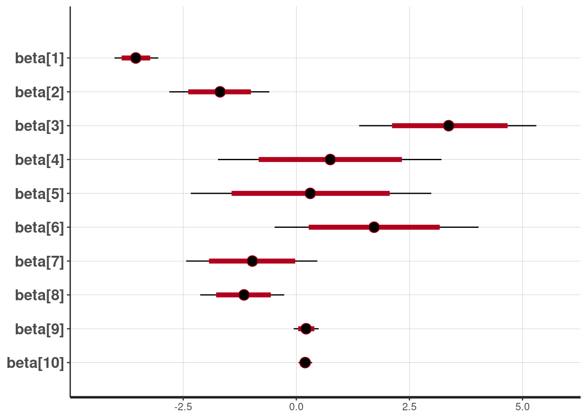
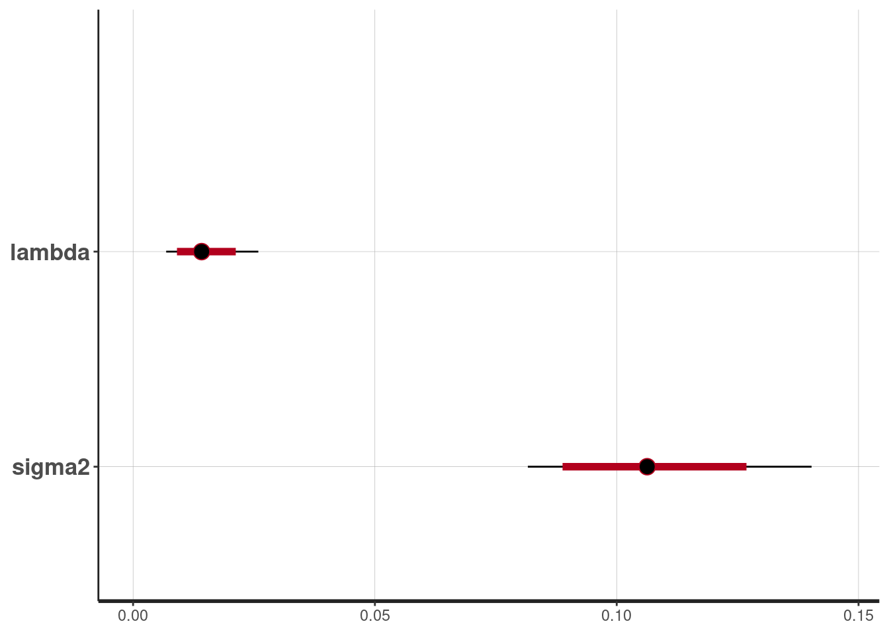
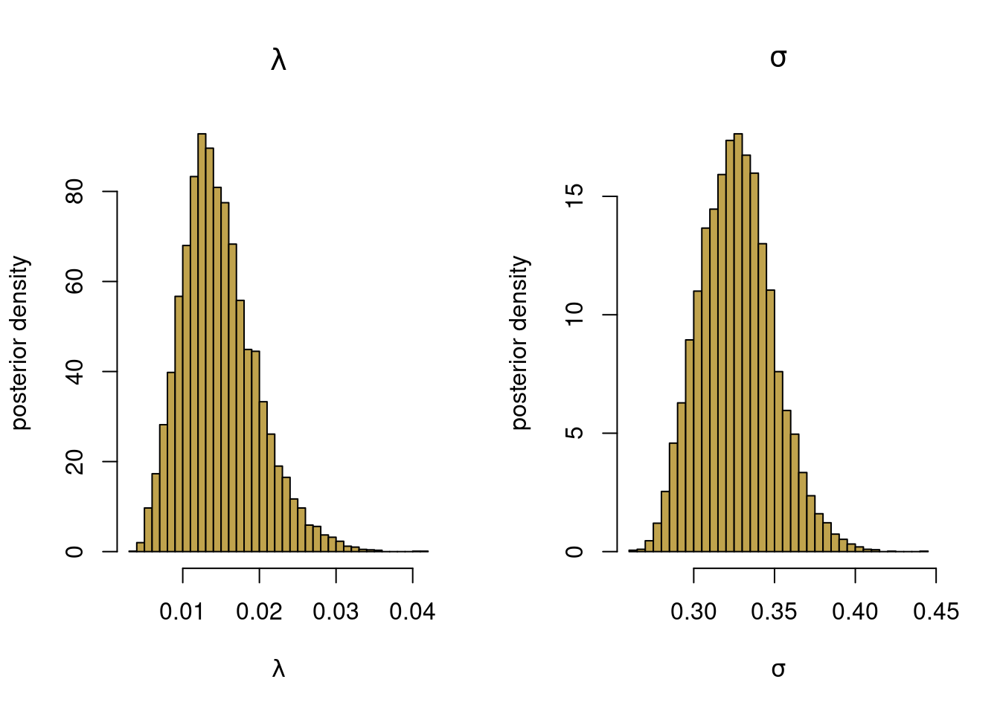
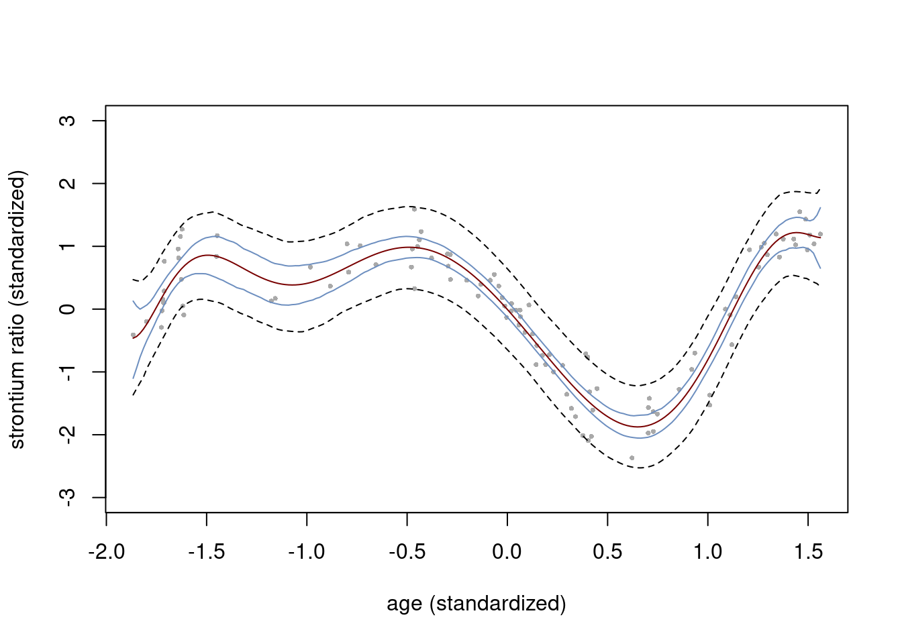

colors = c("#6C8EBF", "#c0a34d", "#780000", "#007878", "#b5c6df","#eadaaa")Bayesian nonlinear regression in RStan
Polynomial regression with L2-regularization prior
Model
This notebook illustrate how to use a polynomial regression model \[y = \beta_0 + \beta_1 x + \beta_2 x^2 + \ldots + \beta_p x^p + \varepsilon, \quad \varepsilon \overset{\mathrm{iid}}{\sim} N(0,\sigma^2)\] in rstan.
Prior
An L2-prior (ridge) is used to prevent overfitting \[\beta_j \vert \sigma^2 \overset{\mathrm{iid}}{\sim} N\Big(0,\frac{\sigma^2}{\lambda^2}\Big) \] where the regularization parameter \(\lambda\) (which is a precision = 1/variance parameter) is learned from the data. The regularization parameter is parameterized as variance \(\psi^2 = 1/\lambda\) in the sampling with the prior \[ \psi^2 \sim \mathrm{Inv-}\chi^2(\omega_0,\psi_0^2).\] The intercept is given a separate prior \[\beta_0 \sim N(0,\sigma_{0,\mathrm{intercept}}^2)\] The noise variance is assign the usual scaled inverse chi-squared prior \[ \sigma^2 \sim \mathrm{Inv-}\chi^2(\nu_0,\sigma_0^2).\]
Colors
Rstan: Install, load, use all cores and no recompile unless needed:
#install.packages("rstan", repos = c('https://stan-dev.r-universe.dev',
# getOption("repos")))
suppressMessages(library(rstan))
options(mc.cores = parallel::detectCores())
rstan_options(auto_write = TRUE)Load the fossil data 1
# Read and transform data
rawdata <- read.csv(
file = "https://github.com/mattiasvillani/introbayes/raw/main/data/fossil.csv"
)
n = dim(rawdata)[1]
y = rawdata$strontium_ratio
x = rawdata$age
plot(x, y, pch = 16, ylab = "strontium_ratio", xlab = "age", col = colors[1],
main = "fossil data")
Standardize the covariates and the response variable.
mean_y = mean(y)
mean_x = mean(x)
sd_y = sd(y)
sd_x = sd(x)
y = (y - mean_y)/sd_y
x = (x - mean_x)/sd_xSet up covariate matrix from 10 degree polynomial.
degree = 10 # polynomial degree
X = matrix(rep(0, n*degree), n, degree)
for (k in 1:degree){
X[, k] = x^k
}
p = dim(X)[2]Setup data structures used by Stan. Set prior hyperparameters values.
data <- list(n = length(y), p = p, X = X, y = y)
prior <- list(sigma0_intercept = 100, nu0 = 2, sigma20 = 0.11, omega0 = 10, psi20 = 100)Set up stan model (as a string. Can also be defined it in a separate file)
l2regression = '
data {
// data
int<lower=0> n; // number of observations
int<lower=0> p; // number of covariates
matrix[n, p] X; // covariate matrix
vector[n] y; // response vector
// prior
real<lower=0> sigma0_intercept;
real<lower=0> nu0;
real<lower=0> sigma20;
real<lower=0> omega0;
real<lower=0> psi20;
}
parameters {
real beta0; // intercept
vector[p] beta; // regression coefficients
real<lower=0> sigma2; // error standard deviation
real<lower=0> psi2; // psi2 = 1 / lambda, in the usual L2-regularization
}
model {
beta0 ~ normal(0, sigma0_intercept);
sigma2 ~ scaled_inv_chi_square(nu0, sqrt(sigma20));
psi2 ~ scaled_inv_chi_square(omega0, sqrt(psi20));
beta ~ normal(0, sqrt(sigma2*psi2));
y ~ normal(beta0 + X * beta, sqrt(sigma2));
}
generated quantities {
real<lower=0> lambda = 1/psi2;
}
'Run the HMC sampling and plot the MCMC
nDraws = 5000
fit = stan(model_code = l2regression, data = c(data, prior), iter = nDraws)Trying to compile a simple C fileRunning /usr/lib/R/bin/R CMD SHLIB foo.c
using C compiler: ‘gcc (Ubuntu 11.4.0-1ubuntu1~22.04) 11.4.0’
gcc -I"/usr/share/R/include" -DNDEBUG -I"/home/mv/R/x86_64-pc-linux-gnu-library/4.4/Rcpp/include/" -I"/home/mv/R/x86_64-pc-linux-gnu-library/4.4/RcppEigen/include/" -I"/home/mv/R/x86_64-pc-linux-gnu-library/4.4/RcppEigen/include/unsupported" -I"/home/mv/R/x86_64-pc-linux-gnu-library/4.4/BH/include" -I"/home/mv/R/x86_64-pc-linux-gnu-library/4.4/StanHeaders/include/src/" -I"/home/mv/R/x86_64-pc-linux-gnu-library/4.4/StanHeaders/include/" -I"/home/mv/R/x86_64-pc-linux-gnu-library/4.4/RcppParallel/include/" -I"/home/mv/R/x86_64-pc-linux-gnu-library/4.4/rstan/include" -DEIGEN_NO_DEBUG -DBOOST_DISABLE_ASSERTS -DBOOST_PENDING_INTEGER_LOG2_HPP -DSTAN_THREADS -DUSE_STANC3 -DSTRICT_R_HEADERS -DBOOST_PHOENIX_NO_VARIADIC_EXPRESSION -D_HAS_AUTO_PTR_ETC=0 -include '/home/mv/R/x86_64-pc-linux-gnu-library/4.4/StanHeaders/include/stan/math/prim/fun/Eigen.hpp' -D_REENTRANT -DRCPP_PARALLEL_USE_TBB=1 -fpic -g -O2 -ffile-prefix-map=/build/r-base-6tgf7J/r-base-4.4.2=. -fstack-protector-strong -Wformat -Werror=format-security -Wdate-time -D_FORTIFY_SOURCE=2 -c foo.c -o foo.o
In file included from /home/mv/R/x86_64-pc-linux-gnu-library/4.4/RcppEigen/include/Eigen/Core:19,
from /home/mv/R/x86_64-pc-linux-gnu-library/4.4/RcppEigen/include/Eigen/Dense:1,
from /home/mv/R/x86_64-pc-linux-gnu-library/4.4/StanHeaders/include/stan/math/prim/fun/Eigen.hpp:22,
from <command-line>:
/home/mv/R/x86_64-pc-linux-gnu-library/4.4/RcppEigen/include/Eigen/src/Core/util/Macros.h:679:10: fatal error: cmath: No such file or directory
679 | #include <cmath>
| ^~~~~~~
compilation terminated.
make: *** [/usr/lib/R/etc/Makeconf:195: foo.o] Error 1Warning: There were 9728 transitions after warmup that exceeded the maximum treedepth. Increase max_treedepth above 10. See
https://mc-stan.org/misc/warnings.html#maximum-treedepth-exceededWarning: Examine the pairs() plot to diagnose sampling problemsWarning: Bulk Effective Samples Size (ESS) is too low, indicating posterior means and medians may be unreliable.
Running the chains for more iterations may help. See
https://mc-stan.org/misc/warnings.html#bulk-esss <- summary(fit, probs = c(0.025, 0.975))
s$summary # all chaines merged mean se_mean sd 2.5% 97.5%
beta0 -0.01102491 0.0020480043 0.062088468 -0.132040979 0.11359197
beta[1] -3.54509096 0.0103971283 0.245300449 -4.018940295 -3.05050592
beta[2] -1.69130587 0.0265136575 0.549648763 -2.806646061 -0.59519626
beta[3] 3.37727141 0.0537827006 1.006046306 1.387883901 5.30385658
beta[4] 0.75522448 0.0665368262 1.244143591 -1.731836231 3.20843416
beta[5] 0.32041333 0.0804000791 1.380493353 -2.332959550 2.98132234
beta[6] 1.71739499 0.0632852940 1.135291419 -0.479684906 4.03126195
beta[7] -0.98058277 0.0445465236 0.753404951 -2.434173940 0.46458006
beta[8] -1.16475257 0.0271090641 0.474313465 -2.124298982 -0.26694430
beta[9] 0.21863099 0.0082264261 0.141361175 -0.058333580 0.49425411
beta[10] 0.19594268 0.0044441807 0.077342510 0.049524474 0.34927066
sigma2 0.10721451 0.0004535947 0.015002660 0.081624887 0.14028494
psi2 75.71576647 0.8237351557 27.379003372 38.618704179 146.17680073
lambda 0.01477788 0.0001414448 0.004860764 0.006841031 0.02589419
lp__ 23.34076060 0.0633054090 2.699092224 17.143256387 27.54392374
n_eff Rhat
beta0 919.0945 1.004063
beta[1] 556.6342 1.006193
beta[2] 429.7652 1.007814
beta[3] 349.9055 1.011663
beta[4] 349.6366 1.010397
beta[5] 294.8191 1.013942
beta[6] 321.8171 1.011974
beta[7] 286.0417 1.014072
beta[8] 306.1272 1.012923
beta[9] 295.2826 1.013234
beta[10] 302.8678 1.012937
sigma2 1093.9577 1.002273
psi2 1104.7400 1.003883
lambda 1180.9604 1.003501
lp__ 1817.8323 1.000108Plot results
The posterior mean and 80% and 95% credible intervals for the \(\beta\) parameters
plot(fit, pars = c("beta"))ci_level: 0.8 (80% intervals)outer_level: 0.95 (95% intervals)
and for \(\lambda\) and \(sigma^2\)
plot(fit, pars = c("lambda", "sigma2"))ci_level: 0.8 (80% intervals)outer_level: 0.95 (95% intervals)
Extract the draws for \(\lambda\) and \(\sigma^2\) and plot histograms.
postsamples <- extract(fit, pars = c("lambda", "sigma2"))
par(mfrow = c(1,2))
hist(postsamples$lambda, 50, freq = FALSE, col = colors[2],
xlab = expression(lambda), ylab = "posterior density",
main = expression(lambda))
hist(sqrt(postsamples$sigma2), 50, freq = FALSE, col = colors[2],
xlab = expression(sigma), ylab = "posterior density",
main = expression(sigma))
Plot the fit with 95% credible bands
nThin = 10 # Only keep every nThin draws (for storage)
m = floor(nDraws/nThin)
nGrid <- 200 # Number of gridpoints in x-space
postsamples <- extract(fit)
nDraws <- dim(postsamples$beta)[1]
xGrid <- seq(min(x), max(x), length = nGrid)
XGrid = matrix(rep(0, nGrid*degree), nGrid, degree)
for (k in 1:degree){
XGrid[, k] = xGrid^k
}
postSampRegLine <- matrix(rep(0, m*length(xGrid)), m, length(xGrid))
predSamp <- matrix(rep(0, m*length(xGrid)), m, length(xGrid))
for (i in 1:m){
j = 1 + (i-1)*nThin
postSampRegLine[i,] <- postsamples$beta0[j] + XGrid %*% postsamples$beta[j,]
predSamp[i,] <- postSampRegLine[i,] + rnorm(1, 0, sqrt(postsamples$sigma2[i]))
}
plot(x, y, pch = 16, col = "darkgray", cex = 0.5, ylim = c(-3,3),
xlab = "age (standardized)", ylab = "strontium ratio (standardized)")
lines(xGrid, colMeans(postSampRegLine), type = "l", col = colors[3])
lines(xGrid, apply(postSampRegLine, 2, quantile, probs = c(0.025) ), type = "l", col = colors[1])
lines(xGrid, apply(postSampRegLine, 2, quantile, probs = c(0.975) ), type = "l", col = colors[1])
lines(xGrid, apply(predSamp, 2, quantile, probs = c(0.025) ), type = "l", lty = 2, col = "black")
lines(xGrid, apply(predSamp, 2, quantile, probs = c(0.975) ), type = "l", lty = 2, col = "black")
Footnotes
Chaudhuri, P. and J. S. Marron (1999). Sizer for exploration of structures in curves. Journal of the American Statistical Association↩︎